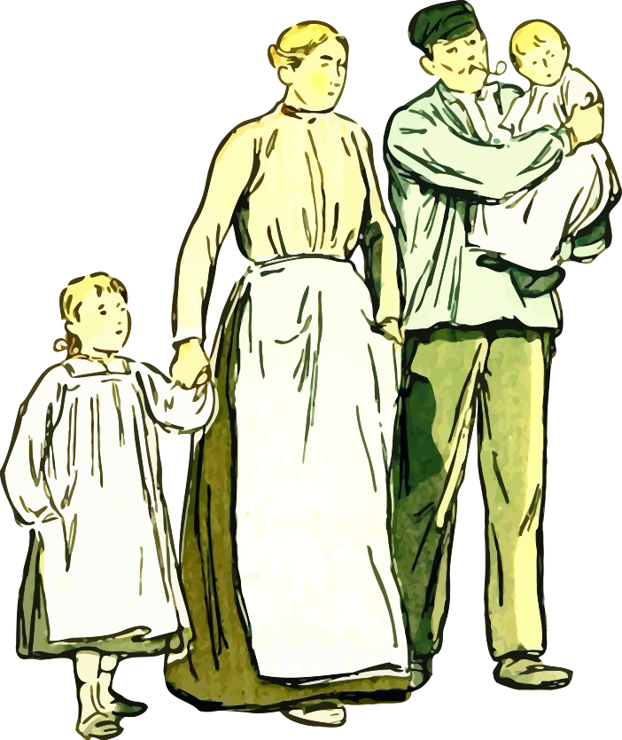
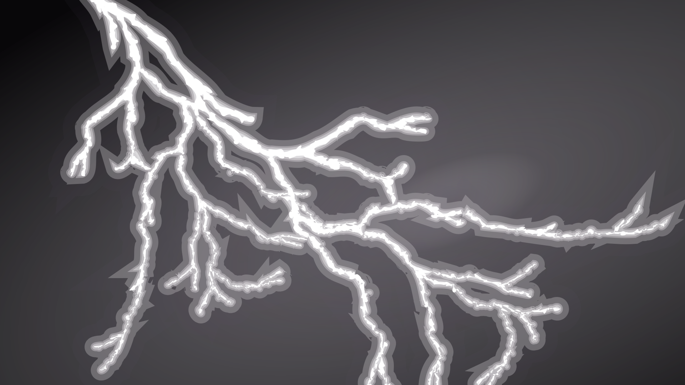

Göncöl személye a forrásom szerint csak Csallóközben jelenik meg,
ugyanakkor én elképzelhetőnek tartom, hogy akár az egész országban
is ismerhették, ahogy a róla elnevezett csillagképet is ismerik.
Kevés töredék maradt fenn róla sajnos, igyekszem mindent ide összegyüjteni, amit találok róla.
Göncöl egy táltos volt, akinek csodálatos képességei voltak, többet között:
Jövőbelátás
Beszélgetés madarakkal, állatokkal
A fák és az erdő suttogásának megértése
Szekerével a levegőben közlekedés
Természeti erők irányítása
Gyógyítás
Holtak feltámasztása
Elmetrükk (?)
Külleme
A csallóközi öregek elmondása szerint, Göncöl táltosnak hosszú fehér haja és nagyon
hosszú, dús ezüst szakálla volt. Szemében a nap és a hold ragyog, benne tündökölnek a csillagok.
Öreg kora ellenére is sudár, egyenes mint a szálfa, igen gyorsjárású ember volt.
Mindig földig érő fehér köpenyt hordott, bár egyesek szerint olykor pásztornak vagy koldusnak álcázta magát,
de máskor viszont álcázatlanul járt az emberek között, mikor őket gyógyította ,vagy épp büntette.
Otthona magas hegyen volt, hogy közel tartózkodjon az éghez.
Szóval mindent összevetve, a külleme kicsit
Gandalfra hasonlít szerintem a Gyűrűk urából,
ezért az oldalt látható illusztrációs képeknek is
Gandalfról (és Szarumánról) készült rajongói alkotásokat raktam be :D.
Egyesek szerint Göncöl táltos volt az, aki magát a szekeret/kocsit is feltalálta,
lévén, hogy milyen "tudákos" ember volt, mennyi-féle rejtett tudományhoz is értett.
Ezt bizonyítandó, azóta kiderült, valóban a Komárom megyei ,,Kocs" községről származik
a ,,kocsi", amely ugyanezzel a névvel átterjedt más nyelvekben is (coach, kocz...),
de erről majd máskor.
,,Mielőtt még az idegenlelkü Tamások képére kiülne a gúnyos mosoly, nyomban elmon
dom, hogy itt nem általában a szekér, hanem egy sajátosan magyar
szekér feltalálásáról van
szó csupán!"
Szekeréről három fontos dolgot kell tudni:
Nagyon nehéz volt
Ökrök nem hajtották, mégis ment.
Képes volt repülni
A néphiedelemben a szekér ezen tulajdonságairól való tudomás őrződött meg.
,,Olyan nehéz, mint a Göncöl szekere.''
,,Csak a Göncöl szekeréhez nem kell ökör...''
A következő bekezdéshez nem találtam most meg a forrást, de azért leírom:
A szekér kerékágya eltörött, Göncöl bajba jutott, de az emberek valamiért nem segítettek neki.
Eltűnése
Göncölt senki sem látta meghalni. Az égbe ment a szekerével együtt, s ez a szekér, amit mi
manapság csak úgy ismerünk ,,Göncöl szekere", avagy ,,Göncölszekér" csillagkép.
Sok Göncöl családnevű ember van a mai napig, de fontos leszögezni, hogy Göncöl táltosnak
utódai nem voltak. - Mondta egy elbeszélő a gyüjtőnek, minden bizonnyal azért, hogy
kihangsúlyozza, Göncöl nem egy egyszerű földi halandó volt, és nem akarta nevét az
átlag halandó emberekkel összemosni, azonosítani.
Úgy tartják, ahogyan Göncöl a Földön szállt a levegőben a szekerével, ugyanígy szálldogál
odafenn is, és kíséri a mennybe az elhunytakat.
(Ezen a ponton már majdhogynem olyan,
mintha egy félisten lenne, ezért egyesek megpróbálták/megpróbálják a magyarok istenével is
azonosítani)
Göncöl Táltos a mondákban
Sajnos csak egyetlen egyet találtam meg a mondák közül, melyek Göncölt említik,
ugyanakkor a forrásaim egy rakat ilyet említenek, az egyik névvel is említi őket,
idézetekkel is.
Jobb híján leírom, hogy ezek miről szólnak a források szerint, beillesztem ide az
idézeteket és töredékeket, valamint az egy mondát, ami megvan.
de csodás lenne,
ha itt elhelyezhetném magukat a mondákat. Kérem, ha bárki talál ilyet, feltétlen
keressen fel ez ügyben.
,,Másik rege"
Ha éjjel arrafelé fordulunk orcánkkal, amerre a Nap sohasem jár, látunk egy nem
valami nagy, de fényes csillagot. Ez a csillag nem mozdul el a helyéről soha, mert
nem is csillag az, hanem egy leásott kőszobor (kőoszlop).
Tőle nem messze, egymás
mellett két csillag van. Az ám, de ezeket is csak az avatatlan ok tarthatják csillagoknak.
Nem csillagok ezek, hanem legelésző táltosparipák, melyeket Göncöl táltos dédapja
kötött a kőoszlophoz, majd ezt mondta hét daliás unokájának:
— Én most aluszom egyet. Mire felébredek, valamelyitek oldozza el a két táltost és
fogja be abba a kocsiba, amit innét nem messzire, a magas fűben elrejtettem! Amelyiteknek
sikerül, az lesz minden titkaim örököse, tudója, annak adom át minden tudásom,
minden hatalmam!
A vénséges vén sámán ezzel leheveredett és azon nyomban el is aludt, mint minden
hétezer esztendőben egyszer.
A hét deliszép unoka közül először a legidősebb próbálkozott, majd a második, harmadik,
negyedik, ötödik, hatodik is. De — mint mondám — csak próbálkozott! Mert
akárm ilyen ügyesek, bátrak is voltak, és lóértők pendelyes koruk óta, a szem kápráztatóan
tündökletes két fehér táltos rúgott, harapott, még csak közelíteni sem engedett
magához! Közben pedig teltek-múltak az évek, az évtizedek, az évszázadok és az évezredek.
Kerek hatezer esztendő telt el azóta, hogy a vénséges vén sámán álomra hajtotta
ősz fejét.
S ím, a legfiatalabb dédunoka, Göncöl megtalálta a magas égi fűbe rejtett, gondosan
álcázott, aranyküllűs-ezüstküllűs szekeret. Ügyesen összerakta és befogott eléje négy
pompás éjfekete paripát, s kerülgetni kezdte velük a két fehér táltost, amíg azok a szün
telen vigyázásba bele nem fáradtak, s meg nem szelídültek. Akkor aztán — mielőtt még
a hétezredik év letelt volna — Göncöl az éjfekete paripákat kicsapta az égi legelőre,
a szekér elejbe pedig befogta a két habfehér táltost! De ideje is volt már, mert letelt
a hétezredik esztendő, dédapja felébredt és szemeit dörzsölgetve mondta:
— Na végre egy kicsinyt kialuhattam magam !
S alighogy ezt kimondja, az égről minden csillag eltűnik. Mert nem mások az égi
csillagvirágok, mint csatában elhullott daliák, akik most, ebben a szem pillantásban fel
támadnak. S a feltámadott harcosokkal a sámán mindent megtehet, amit csak akar,
mert a vitézek láthatók is, meg láthatatlanok is, ahogyan az öreg akarja. És semmiféle
fegyver nem fog rajtuk.
Gyűjtötte: Khín Antal
Göncöl táltos csillagjárása
[...] Göncöl még pendelyes gyermek. Göncöl ükapja, egy sámánfejedelem, épp
maszlagolt borral van elkábítva. Ebben a bódult állapotban a szekeret
véletlen nekihajtja egy tölgyfának, ez óta ferde/törött a göncölszekér rúdja. [...]
[...] A csillagszekeret húzó lovak nagyon fáradtak, elgyengültek, kín számukra
húzni a szekeret. Göncöl kilyukasztja az arany- és ezüstlisztes-zsákokat, így
könnyítve meg a lovak sorsát, és így juttatva aranyhoz a csallóközi aranyászokat.
Göncöl táltos és a nyúl
[...] Göncöl miközben révületében az alvilági hatalmakkal viaskodik a Földért
és lakóiért, előtte minden elsötétül, és a hazafelé vezető utat nem találja meg.
[...] De egy üregi nyúl hazavezeti őt. Ezért hálából a táltos felhelyezi a nyulat
A Holdra, így többé nem kell rettegni neki a ragadozóktól.
,,Rendkívül érdekes és a történelem előtti időkbe visszanyúló egyezés lehet ez!
Ugyanis rajtuk - a csallóközi öregeken - kívül, még az észak- és dél-amerikai indiánok,
a mongolok, a hinduk és a ceyloniak szerint is nyúl látható a Holdon"
Göncöl táltos [...]
A halász és a zöld ember
Régen, nagyon régen történhetett, amit most elmesélek nektek, mikor még tiszta és szabad volt a Duna, nem szennyezte , nem szorította gátak közé senki... Szép, derűs napokon olyan kék volt mindig, mintha egyenesen az égől hömpölygött volna alá... S éjszaka bársonyos, sötét vizében több csillag fürdött, mint az égen...
Szerettük a folyamunkat, s ő is szeretett bennünket. Nekünk adta minden kincsét, s mi is megosztottuk vele búnkat, örömünket... A csendes Duna-ágak varázstükre azóta is híven őrzi a csallóközi tündérek és az ősök istenéhez hű elődeink képét, már évszázadok óta...
Élt akkoriban a Duna partján egy halász meg szép fiatal felesége. Ha azonban valaki azt hiszi, hogy csak ketten voltak, igen nagyot téved, mert annyi gyerekük volt, hogy talán még ők maguk sem tudták, hogy mennyi! És minden évben gyarapodott a család... Minél többen lettek, annál több volt házuk táján az öröm és boldogság...
- Megsegít bennünket az Öregisten, no meg az Öreg-Duna! - ezzel felelt a derék halász, ha valaki sajnálkozni próbált rajta a szaporaság, a szakadatlan gyermekáldás miatt. - Amíg elég hal van a vízben, madártojás a fészekben, jóban vagyok a pásztorral, a vadásszal és a molnárral, addig nem kell félnem a holnaptól!...
Reggeltől napestig, de néha még éjszaka is járta a vizet, és mindig kedvezett neki a szerencse. Egyszer többet, máskor kevesebbet fogott, de sohasem maradt üresen a hálója... Igaz ugyan, hogy tenyerét megkeményítette az evező meg a háló kötele, de sohasem panaszkodott, sohasem mondta, hogy fáradt, mindig énekszóval tért haza. Felesége és gyerekei már messziről meghallották, amint vidáman nótázott és szaladtak ki eléje a partra... ő meg énekelte:
Én vagyok a halászlegény,
én járok a víz tetején...
Aranyosi patak alatt
én fogom az aranyhalat...
Így éltek ők, sokacskán és egyre töbecskén, boldogságban és békességben, elégedetten hosszú-hosszú évekig, de még csak a múló idő sem fott ki rajtuk, a munka sem öregítette őket, hiszen mindig örömmel és zokszó nélkül végezték feladatukat...
De egyszer aztán fordult a világ. A mi halászunkat cserbenhagyta a szerencséje: messzire elkerülték hálóját a halak!... Teltek a napok, a hetek egymás után, és ha jó barátaik nincsenek, bizony alaposan bekvártélyozta volna hozzájuk magát az ínség. Hej, nem is volt kedve nótázásra a derék embernek, s ha mégis dalra fakadt, akkor igen-igen szomorú volt a nótája. A szíve is elfacsarodott tőle annak, aki meghallotta. Leggyakrabban ezt a bús nótát énekelgette:
Három hete, hogy a Dunát halásztam,
Könnyeimtől egy csöpp vizet nem láttam.
Kifogtam a kedves rózsám kendőjét,
Kék selyemmel rávarrattam a nevét.
Úgy bizony, ilyen és csak ehhez hasonló nótákat fújt el a szegény nagy keservében... Soha senkinek nem ártott, lám mégis akadtak irigyei, már ahogyan ez a szerencsésebb emberek esetében lenni szokott.
Közülük is a legrosszabb volt a szomszédasszony, aki hányszor köszörülte rajtuk gonosz nyelvét, bocsásson meg neki az Öregisten, ha megérdemli! Ha szomorú nótával sírta bánatát a halász, akkor kárörvendően mondogatta a hozzá hasonlóknak:
-Úgy köll neki! Miért csinált annyi gyerekecskét!
Ha pedig hallgatott a halász, akkor meg ezzel traktálta őket:
-Most bezzeg hallgat, mint csík a varsában!
Szerencsére nem voltak sokan az ilyen gonoszkodók... Egy este a halász már hazafelé fordította a ladikja orrát, s közben így fohászkodott:
-Hej Öregisten, Öreg-Duna, ha ti nem, akkor ugyan ki segíthet rajtunk? Erre, mintegy varázsszóra, felbukkant a hullámokból a zöld ember, és így szólt az ámuldozó halászhoz:
-Ha ők nem is segítenek, én bizonyára segíthetek rajtad, te szegény halász... De csak akkor, ha szót értünk egymással...
Fura egy teremtmény volt a zöld ember, talán inkább az ördögé, mint az Öregistené, s bárki más emberfia halálra rémült volna láttán, de a mi halászunk nem ijedt meg egy cseppet sem. Látótt ő már farkaskoldust, esőcsináló garabonciást, kétfejű borjút, de még halfarkú kisasszonyt is a saját két szemével.
-Igazat szólsz-e? - kérdezte bátran
-Igazat bizony! - mondta a zöld ember. - De nehogy azt higgyed, hogy ingyen teszem, mert az én szívemet ugyan nem lágyíthatod meg bánatos dalaiddal... Ha nekem adod azt, ami a házadban van, de te nem tudsz róla, azután mindig szakadásig tele lesz a hálód!
-Olyan az én házamban, amiről nem tudok?!... Hát az ugyan mi lehetne?... És ha ezután sem tudom meg, akkor mi lesz?- kérdezte a halász.
-Ne félj, gondom lesz rá nekem, hogy idejében megtudd! - hangzott a rejtélyes válasz.
Gondolkozott erősen a halász, ugyan mi is lehet az, ami a házában van, de ő nem tud róla?... Ha van is ilyen, csak valami kicsiség lehet... - Hát, ha csak ez a kívánságod, rajtam igazán ne múljék! Akár kezet is adhatok rá - mondta ki végre.
-Esküdj az Öregistenre, hogy pontosan mához egy évre elhozod nekem ide azt, amiben megalkudtunk!
-Esküszöm!... De most aztán te is álld ám a szavad, különben érvénytelen az alku!
-Vesd ki csak a hálód, aztán majd meglátod, mi lesz! - vágta el a vitát a titokzatos zöld ember, és ezzel már el is tűnt a halász szeme elől. Az bizony nem sokat töprengett, s nemsokára hallal teli ladikkal kötött ki a parton. Dalolásra azonban most sehogy sem volt kedve, nem úgy mint máskor...
Hiába tért haza gazdag zsákmánnyal, valami igen-igen rosszat sejtett! S lám, otthon a felesége egy sivalkodó újszülöttel a karján fogadta a hazatérő férjét. Arcán boldog mosollyal mondta:
- Nézd, ismét megajándékozott egy szép, egészséges fiúgyermekkel az Öregisten.
Amikor a férje arcán kétségbeesést, s nem örömet látott, rémülten megkérdezte:
-Mi történt veled?

A halász pedig elmondta találkozását a zöld emberrel, azt is, hogy milyen meggondolatlan ígéretet tett neki, csak azért, hogy végre ismét hal legyen a hálójában... Hogy tele hálót húzzon ki megint... Talán újból jobb napok köszöntenek ránk - sóhajtotta - , de hát milyen áron?!...
Telt, múlt az idő, a kisfiú megnőtt, növekedett annak rendje és módja szerint. Gügyögése, kacagása azonban csak még bánatosabbá tette szülőit. Hiszen gondolni sem tudtak másra, csak arra a végzetes időpontra, amikor egyéves korában a gyönyörű gyermeket át kell adniuk a gonosz zöld embernek...
Bánatuk okát hamarosan megtudta a szomszédság meg az egész környék, s a jó emberek együttérzően velük búslakodtak, de segíteni nem tudott rajtuk.
-Igaz, sok náluk a gyerek, talán még több is a kelleténél, de hát mindig az a hal volt a legszebb, amelyik kiugrott a hálóból - mondogatták sajnálkozva.
Egyszer aztán meglátogatta a halászt az apósa. Öreg, nagyon reszketeg ember volt már, időt jósolt annak már minden csontja, minden porcikája, de minden szava felért egy aranytallérral. Amikor panaszolták neki szomorúságuk okát, rövid töprengés után így szólt:
- Jól figyelj ide, fiam! Az Amadé-réten lakik egy időtlenül öreg csikós... Már akkor is öreg volt, amikor én még pendelyes gyerkőcöcske voltam, de öregnek ismerte már a nagyapám is... Azt beszélik róla, hogy Göncöl táltos unokája ő! Neki magának is táltos hírét költik, mert már nagyon sok bajba jutott becsületes emberen segített... A helyedben én rögvest fognám magam, és tőle kérnék tanácsot... Ha ő nem tud, akkor már igazán senki nem segíthet a bajotokon!
- Igaza van, apámuram! - csillant fel a halász szeme. - Én is hallottam már róla ilyet rebesgetni!
Mindjárt másnap reggel pirkadatkor el is indult - csak úgy gyalogosan - az Amadé-rétre... Bizony, késő délutánra fordult már az idő, amire megtalálta a táltos kunyhóját. Előtte ült egy csökön az időtlenül öreg bölcs, és gondolataiba merülve eregette a füstöt. Föl sem nézett látogatójára, már sorolta is:
- A szemveréstől, igézéstől óv a tisztesfű... A váltott gyereket megismerteti a kakukkfű...
Mondta, csak mondta az öreg a bölcs tanácsokat, majd végre elhallgatott és felpillantott a türelmesen várakozó halászra:
-Tudom én, fiam, nagyon jól tudom, miért jöttél el hozzám, de azért csak mondd el inkább te magad, mert jót tesz az embernek a bajban, ha kibeszélheti magát... Látom én, hogy jóféle vagy, az eszed is forog, ha megkened, s te még nem bökdösted meg a szelet a vasvellával, mint a dercsikai ember... Vedd le a kalapod, ereszd ki alóla a szelet, és ülj le ide mellém, mert biztosan elfáradtál!
A halász töviről hegyire elmondta a bölcs beszédű öregnek családjuknak búját-baját. Az meg egy darabig csak pöfékelt, majd így szólt:
-Szerencséd, hogy még idejében hozzám jöttél tanácsért!... Pont dióverő vásár után lesz egyéves a fiad... Aztán eltettétek-e a gyerek köldökzsinórját?
- Biztosan! a feleségem eddig minden fiúgyermekét eltette!
Akkor semmi baj, fiam! A köldökzsinórt varrja bele halcsont tűvel egy darab fehérített vászonba és annak a napnak estéjén, amikor pontosan éjfélkor találkoznod kell a víziszellemmel, vagyis a zöld emberkével, akassza a gyermek nyakába... Aztán csak bátran evezz be a gyerekkel a Duna közepére, és várj! Bármi lesz is, ne aggódj, semmi bajotok nem történhet!... Ha pedig minden úgy lesz - márpedig úgy lesz -, ahogy most mondom, hozol nekem néhány szép halat... Ha akkor még nem dobálnak diót a csontjaimmal... És adok neked még egy tanácsot:
Vigyázz arra, hogy az után soha ne találjon a Dunán az éjfél, mert mindig akkor jár az éjféli halász, aki maga a fiaördög!... És most menj, fiam, segéljen benneteket az Öregisten!...
Boldogan ment haza a halász, szentül megfogadva az öreg táltos minden szavát. Hiszen tudta ő régóta, még a nagyanyjától, s a felesége is tudta jól, hogy bűvös ereje van a fiúgyerekek leszáradt köldökzsinórjának, s aki a nyakában viseli, azt nem fogja semmiféle fegyver... De azt csak most tudta meg, hogy még a gonosz viziszellem ellen is védelmezi viselőjét!
Telt múlt az idő, s lassan elérkezett az a nap is, amikor a megállapodás szerint át kellett adnia a gyermeket a viziszellemnek. Fohászkodtak hát egy nagyot, a fiúcskának a nyakába akasztották a kis tasakot, aztán a halász bátran beevezett vele a Duna kellős közepére, a Lidia-zátony fölött... Göncöl szekere hamarosan megfordult a csillagporos égen...
Pontosan éjfél volt! S e szempillantásban már meg is jelent a gonosz zöld ember. Rémisztő hangon rivallt rá a halászra:
-Becsaptál, te halász, igaz a más eszével, de te magad látod mindjárt ennek a kárát, mert én most legyőzlek téged, igaz a más erejével! S már parancsolta is:
Szélvsész kerekedjen,
Hullám feltámadjon!
Ezerágú villám
Ladikodba csapódjon!
Hirtelen vad égiháború támadt, a villámok meg a ladik körül csapkodtak bele a vízbe...

Az eddig békésen folydogáló Duna tombolni kezdett, vadul hánykolódtak a hullámok, istentelen szélvész nyargalt végig a folyam fölött, mintha a pokol fekete ménese szabadult volna ki.
Szélvész szolgám,
Hű cselédem,
Teljesítsed a parancsom,
Teljesítsed a kérésem!
Ti mély vizek, tomboljatok,
Nyeljétek el a ladikot!
- üvöltötte a zöld ember, túlharsogva az elemek tombolásának hangját.
-Bűvös erő védi őket, megtörik hatalmam rajta! - kiáltotta a szélvész, ezt harsogta a víz is.
Ezüstsörényű, éjfekete szőrű szellemparipák vad ménese száguldott át az égen, s letiporta a pokol ménesét... Egy szempillantás alatt elült a vad vihar, elsimultak a hullámok... Mire a gyermekét féltőn ölelő halász feltekintett, az égen már újra millió csillag ragyogott, az zöld ember megfeketedett tetemét pedig vitte-vitte, sodorta a bosszúálló víz a nagy örvény fele...
-Megmenekültünk! - rebegte a halász, és kezébe vette az evezőket.
A parton már várta őket az egész család, minden barát, s elhatározták, hogy igazán méltón megünneplik a gyermek szerencsés megmenekülését s a gonosz zöld ember vesztét...
Összehordtak minden finomságot, az asszonyok meg sütöttek-főztek, mintha csak a király legkisebbik fiának a lakodalmára készültek volna. Ilyen vígságot nem látott a környék népe sem azelőtt, sem azóta...
Az ételek illata, a vidám kurjongatás odacsalt mindenkit a környékről. Zengett a citera, nyekergett a duda, és szólt a nóta... Mondták a köszöntőket, s vége-hossza nem volt a tréfának, dalnak. A boldog házigazda a megmentett gyermek apja meg a legkedvesebbik nótáját dalolta, úgy mint régen:
Én vagyok a halászlegény,
én járok a víz tetején,
én fogom az aranyhalat
az asszony pentője alatt...
Aranyosi partok alatt
de ficánkolnak a halak.
Feleségem vén pentője
megint feszül, majd elhasad...
Talán legénykorában énekelte ezt a nótát utoljára így, ilyen legényesen, ilyen gondtalan vígsággal, vagy a lakodalmán... Máskor a felesége talán megorrolt volna érte, de most ő is együtt kacagott a vendégekkel.
-Csuka van a tóban - kiáltották kórusban a jószemű legények.
-Harcsa a Dunában! - felelték rá az emberek.
-Már megint?!... Ejnye, már megint? - kacagtak víg fejcsóválással az asszonyok...
(N. László Endre nyomán)
(Csallóközi Tündérmesék - Bágyi Anna Erzsébet összeállításában)
források:
Jankó Zoltán (szerk.): Csallóközi Muzeum (Bratislava. s.n., 1928)
45. oldaltól az 50. oldalig
N. László Endre - Göncöl Táltos csak a Csallóközé!
Ipolyi Arnold -
Magyar Mythologia, 1854
(268. oldal a könyvben / 474. oldal a dokumentumban)
Irodalmi Szemle 1986/1 / ÉLŐ MÚLT / Gágyor József: Falucsúfolók a galántai járásban
(Csallóközi Tündérmesék - Bágyi Anna Erzsébet összeállításában)

 forrás: Suzanne-Helmigh
forrás: Suzanne-Helmigh
 forrás: John Howe
forrás: John Howe  forrás: Eyal Degabli
forrás: Eyal Degabli  forrás: Wesnoth wiki
forrás: Wesnoth wiki 
 Így éltek ők, sokacskán és egyre töbecskén, boldogságban és békességben, elégedetten hosszú-hosszú évekig, de még csak a múló idő sem fott ki rajtuk, a munka sem öregítette őket, hiszen mindig örömmel és zokszó nélkül végezték feladatukat...
Így éltek ők, sokacskán és egyre töbecskén, boldogságban és békességben, elégedetten hosszú-hosszú évekig, de még csak a múló idő sem fott ki rajtuk, a munka sem öregítette őket, hiszen mindig örömmel és zokszó nélkül végezték feladatukat...